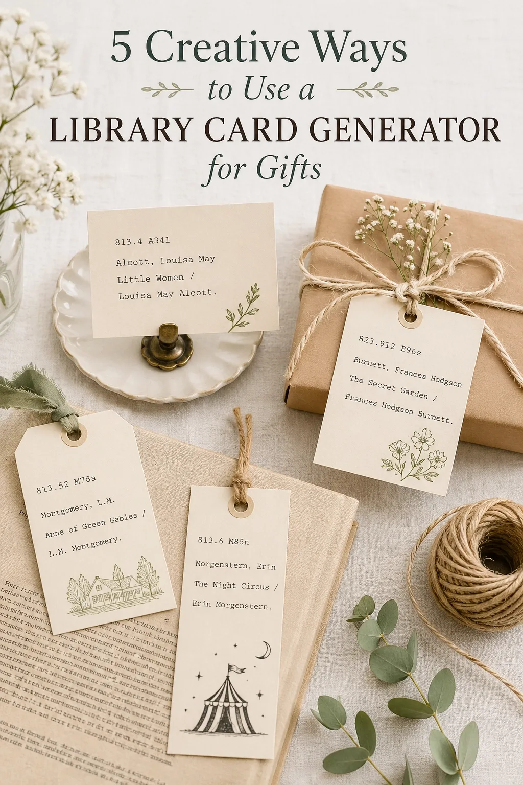

If you have ever stared at a blank greeting card aisle wishing for something more personal, a library card generator is a quiet superpower. The same tool that creates a printable catalog card for a book can also produce custom mini-cards that double as gifts, favors, and keepsakes. Below are five of the best ways to use one without feeling like you are wasting a craft afternoon.
1. Bookworm Birthday Cards
Pick the recipient's favorite novel, fill in their name as the author, and give the card a "publisher" of their hometown and birth year. Add a short, personal summary in the notes field. The result is a tiny portrait of who they are, framed as a library catalog card. Slip it inside a real book - bonus points if the book matches the card.
2. Wedding Favors and Place Cards
A library card generator is perfect for literary or library-themed weddings. Use cards as guest place settings, with each guest's name as the title and a fun "subject heading" describing them. Couples have also used them as table numbers, replacing numbers with classic novel titles. Print the full set on cream cardstock for a vintage feel.
3. Teacher and Librarian Appreciation Gifts
For a teacher, librarian, or mentor, a small set of personalized cards goes a long way. Try one card per book they recommended that mattered to you, with a brief note about why. Tied with a ribbon, the stack becomes a gift that takes ten minutes to make and lasts on a desk for years.
4. Bookmarks With a Story
Cards generated at a slightly taller size make beautiful bookmarks. Print one per chapter of someone's favorite series and gift them as a matched set. Add a recommended pairing - a tea, a song, a film - in the summary line. It turns a stack of cards into a small reading companion.
5. Anniversary or Memory Cards
Use the catalog card structure to record memories instead of books. The "title" becomes a memory ("The Trip to Lisbon"). The "author" becomes the people involved. The notes field holds a short story. Stack them, tie them with twine, and you have a gift that feels like a private archive.
Tips for Better Gift Cards
A few small choices make a big difference. Use cream or ivory cardstock for warmth, pick a typewriter or vintage style for character, and keep the wording short - good cards reward a second read. The fastest way to produce a matched set is with a free library card generator that handles spacing and typography for you.
Make a gift card now
Open the free library card generator and turn a book or memory into a printable keepsake.
Open the generator